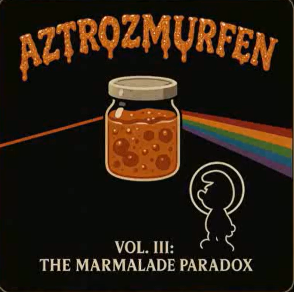
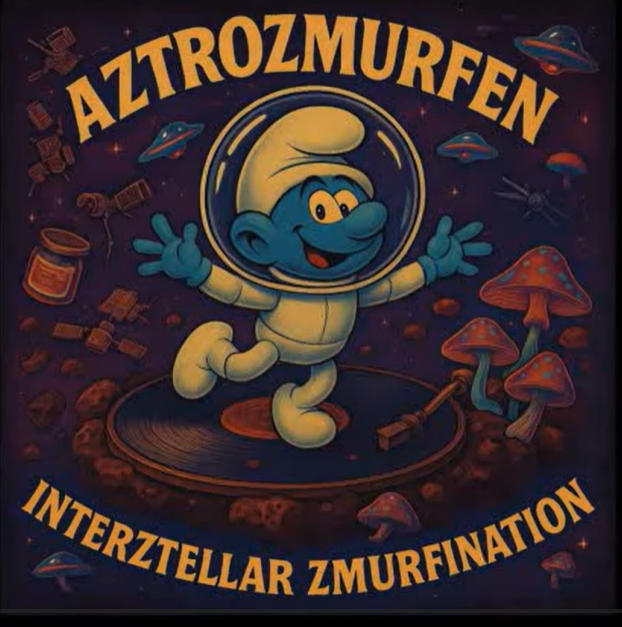
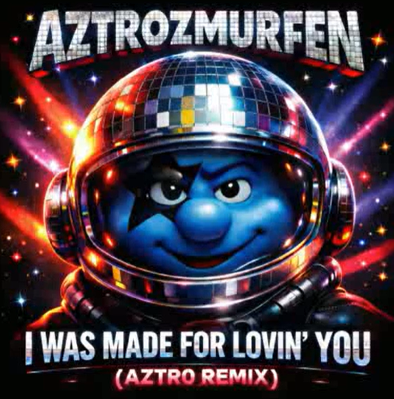

Album · 2026
Xenozmurfic Xenogenez
The origin story, glowing somewhere between catastrophe, creation myth and a serious lack of manual reading.
COSMIC POP TRANSMISSIONS
FROM BEYOND THE MUSHROOM NEBULA.
Aztrozmurfen blends cosmic grooves, psychedelic vibes and playful zmurf energy into otherworldly pop for the dreamers, explorers and stardust souls.
Album · 2026
The origin story, glowing somewhere between catastrophe, creation myth and a serious lack of manual reading.

Album · Vol. III
Recorded somewhere between deep space, a forgotten kitchen and a moment of mild but irreversible confusion.
Album · 2025
Cosmic heartbreak, zmurfonic soul-searching and desperate transmissions from the outer rim of emotional capacity.

Debut album · 2025
Not just a debut album, but a misunderstanding in orbit built from optimism, plywood and questionable physics.
Now available in the onboard player
These two transmissions play directly from assets/audio. Click any track to start listening.
Debut album · 14 tracks
Album · 2025 · 14 tracks
Every track beamed in from the mushroom nebula with love.
100% playful. 100% interstellar. Zero seriousness.
New sounds, visuals and vibes from the furthest frequencies.
Recorded under questionable supervision on Zmurfina XLII.
Official biography · probably
Nobody is entirely sure where Aztrozmurfen came from. The official flight records claim he was discovered aboard Zmurfina XLII after the navigation computer confused “home” with “somewhere near Saturn” and then refused to admit fault.
Since then, he has travelled the outer reaches of the mushroom nebula broadcasting cosmic pop, emotional distress signals, psychedelic grooves and at least one remix that may briefly have caused a small asteroid to dance.
Witnesses describe him as a part-time aztronaut, full-time synth operator and occasional unlicensed philosopher with a worrying tendency to press glowing buttons marked manual override. His songs are said to emerge from malfunctioning keyboards, interstellar confusion, unresolved feelings and a cookie reserve that is almost always critically low.
Somewhere between deep space, a forgotten kitchen and the aftermath of the Great Marmalade Incident, Aztrozmurfen found his mission: to make the universe at least 42% stranger — and, if possible, more danceable.
Filed under
Gallery
A rotating field of covers, signals and visual debris from across the Aztrozmurfen universe.

End of transmission?
Open a playlist, enter the orbit and try not to touch anything labelled “unstable cosmic device”.